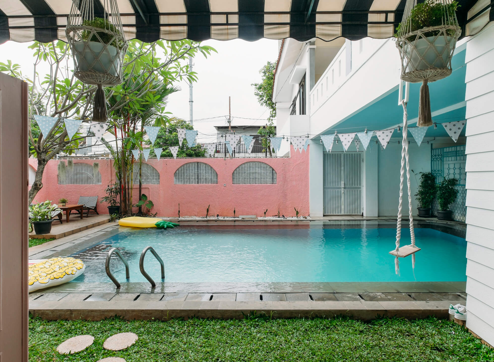
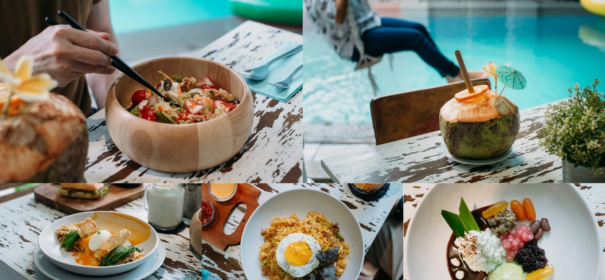
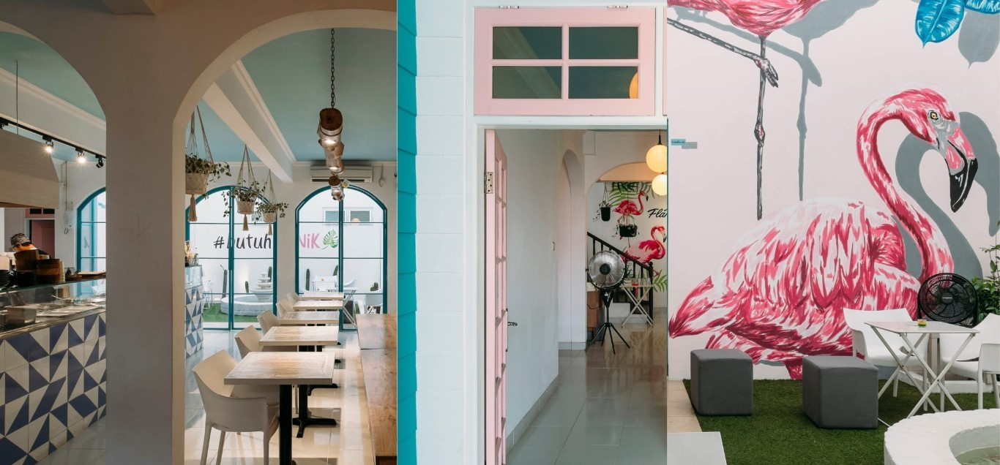

Swimming pool, bright-coloured floats, coconuts, and radio-friendly tunes blasting from speakers. These are the usual thoughts that pop to mind when one mentions a short getaway from the city. But what if the break remains in the city and doesn’t cost you a fortune
Located in the area of Lebak Bulus, within a bed & breakfast called Arif Inn, PiKNiK is what you’d expect to walk into when you’re on a holiday to a tropical island like Bali. The traffic you have to endure may not be appealing, but it definitely beats the hassle of a domestic flight.

Food wise, the menu offers options that reflect the laid-back tropical vibe, such as fried mix crackers, Cenil Rainbow Ice and Thai Crab Salad. Heftier choices like Tempoyak (fermented durian) Fried Rice and Philly Cheese Steak are also available. But given the constant sunny weather in Jakarta, it’s easy to gravitate towards drinks like fruit juice, kombucha and lemonade to kick things off first.

If you’re here for the full experience, just switch into your swimming gear then proceed to jump into the pool while waiting for your food to arrive. Those who are looking for a space to work during weekdays might want to pay PiKNiK a visit too. While the atmosphere can get lively at the outdoor area, things are much more composed inside where you can type away on your laptop to the company of staffs prepping food at the counter
Shielded from the commotion of the main road, PiKNiK aims to help you to leave behind the fact that you’re still within the city. The fantasy may be a short one but it beats having none. Here, life’s a picnic and everyone’s invited.